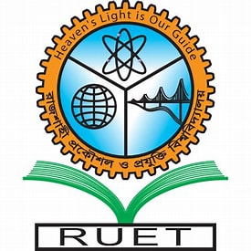

Bachelor of Urban & Regional Planning (BURP)
Rajshahi University of Engineering & Technology, Rajshahi, Bangladesh
2023 – 2027 (expected) · CGPA 3.73 / 4.00
- Thesis: Fire Evacuation Planning of RDA Market, Rajshahi (Supervisor: Nazia Hossain)